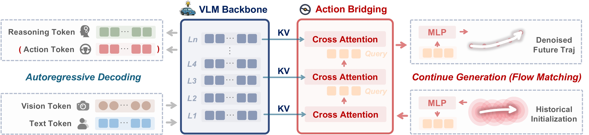
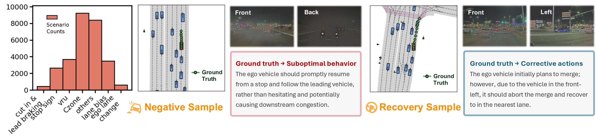
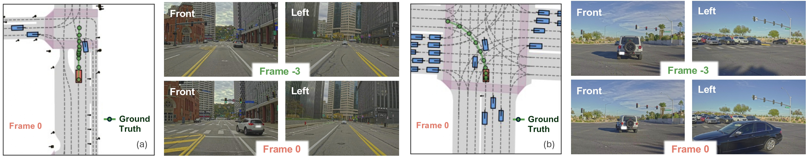
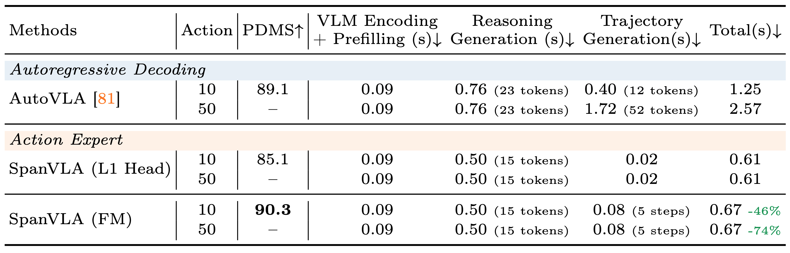
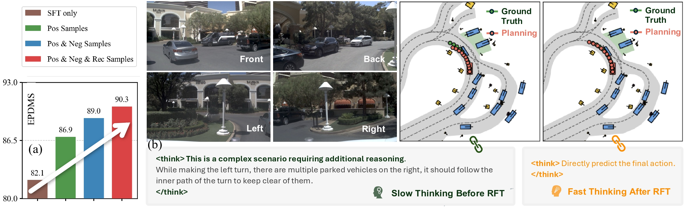
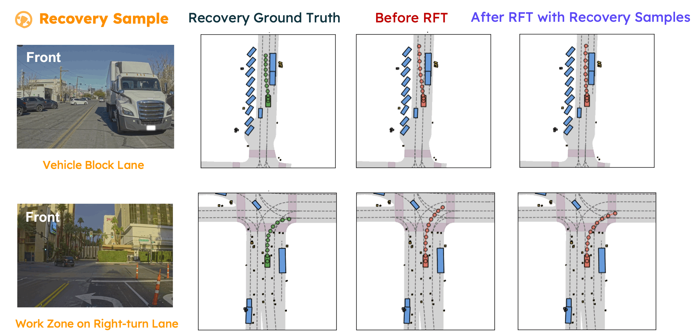

Abstract
Vision-Language-Action (VLA) models offer a promising autonomous driving paradigm for leveraging world knowledge and reasoning capabilities, especially in long-tail scenarios. However, existing VLA models often struggle with the high latency in action generation using autoregressive generation framework and exhibit limited robustness.
In this paper, we propose SpanVLA, a novel end-to-end autonomous driving framework, integrating an autoregressive reasoning and a flow-matching action expert. First, SpanVLA introduces an efficient bridge to leverage the vision and reasoning guidance of VLM to efficiently plan future trajectories using a flow-matching policy conditioned on historical trajectory initialization, which significantly reduces inference time. Second, to further improve the performance and robustness of the SpanVLA model, we propose a GRPO-based post-training method to enable the VLA model not only to learn from positive driving samples but also to learn how to avoid the typical negative behaviors and learn recovery behaviors. We further introduce mReasoning, a new real-world driving reasoning dataset, focusing on complex reasoning-demanding scenarios and negative-recovery samples.
Extensive experiments on the NAVSIM (v1 and v2) demonstrate the competitive performance of the SpanVLA model. Additionally, the qualitative results across diverse scenarios highlight the planning performance and robustness of our model.
Model Structure and Training Strategy

🔗 Two Main Components:
- VLM Backbone processes visual and textual input and generates reasoning (with action during training), employing a unified autoregressive Transformer decoder.
- Efficient Action Bridging is a flow-matching policy conditioned on historical trajectory initialization based on sparse VLM KV-Cache, which significantly reduces inference time.
🔍 Training Strategy:
- Supervised Fine-Tuning (SFT) first trains the VLM to learn reasoning with action supervision. Furthermore, the action bridging is trained with the frozen VLM to learn the efficient action generation.
- Reinforcement Fine-Tuning (RFT) enables the model not only to learn from positive driving demonstrations, but also to learn how to avoid the typical negative behavior and learn recovery behaviors.
mReasoning Dataset
mReasoning includes 30k complex interaction scenarios, and 3k + 3k negative-recovery samples. The dataset is collected from real-world driving scenarios across Las Vegas, Boston, Pittsburgh, and Singapore.

Some complex scenario samples (positive samples) in the mReasoning dataset are shown below

mReasoning Dataset Samples" style="width: 100%; max-width: 100%; height: auto; max-height: 70vh; object-fit: contain; margin-bottom: 1.2rem; margin-top: 2.0rem;">(a) Cut-in scenario: A vehicle from the front-right abruptly cuts in at the intersection. Frame -3 and Frame 0 means the first history frame and the current frame for the camera streams.
(b) Intersection scenario: The ego vehicle has already entered the intersection; despite the red traffic signal, it should yield appropriately and follow the leading vehicle to complete the left turn.
Experiments
Efficient Action Bridging

- 4x faster inference time compared to the autoregressive decoding.
- As waypoint count increases in high-frequency trajectories, runtime grows only slightly.
RFT Performance

- 10% improvement in PDMS on the NAVSIM v1 benchmark with positive, negative, and recovery samples.
Negative-Sample Results

Recovery-Sample Results

BibTeX
@article{zhou2026spanvla,
author = {Zhou, Zewei and Yang, Ruining and Qi, Xuewei and Guo, Yiluan and Chen, Sherry X. and Feng, Tao and Pistunova, Kateryna and Shen, Yishan and Su, Lili and Ma, Jiaqi},
title = {SpanVLA: Efficient Action Bridging and Learning from Negative-Recovery Samples for Vision-Language-Action Model},
journal = {arXiv preprint arXiv:2604.19710},
year = {2026},
}The website design was adapted from nerfies.